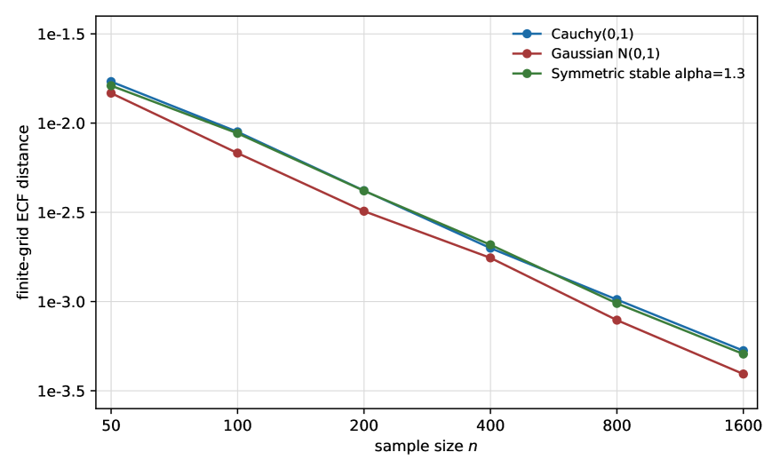
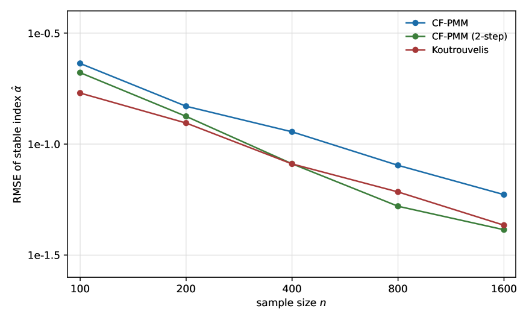

A Lean 4/Mathlib supplement machine-checks selected deterministic identities underlying the bounded-score estimator.
Abstract
We give a characteristic-function formulation of Kunchenko's stochastic-polynomial construction for settings in which raw moments may fail to exist. In the finite-variance trigonometric case, the coefficients of the Kunchenko normal system are expressed through the characteristic function and its derivative. In the moment-free case, empirical characteristic functions on a fixed finite frequency grid define a bounded discrepancy geometry that remains meaningful for Cauchy, symmetric stable, and other heavy-tailed laws. We prove well-definedness and finite-grid almost sure consistency of this empirical characteristic-function geometry. We introduce the associated minimum-CF-distance estimator and establish its identifiability, strong consistency, and asymptotic normality on a fixed grid, with a covariance built from bounded trigonometric moments that stays finite even for Cauchy and stable laws; refining the grid increases the optimal-weight information monotonically to the Fisher information, so the estimator is asymptotically efficient in the dense-grid limit. We also relate bounded sine scores to weak stochastic-polynomial estimating equations. A small Lean 4 / Mathlib supplement checks selected deterministic identities underlying the bounded-score construction; convergence arguments and statistical interpretation remain outside the formalization.
Problem
Kunchenko's stochastic-polynomial estimation assumes raw moments exist, which fails for heavy-tailed laws such as Cauchy and symmetric stable distributions.
Approach
The paper recasts the construction through characteristic functions, using empirical characteristic functions on a fixed finite frequency grid to define a bounded discrepancy geometry, and introduces a minimum-CF-distance estimator. A small Lean 4/Mathlib supplement checks selected deterministic identities underlying the bounded-score construction, while convergence arguments stay outside the formalization.
Results
Proves well-definedness, finite-grid almost-sure consistency, identifiability, strong consistency, and asymptotic normality, with efficiency in the dense-grid limit.

Figure 1. Finite-grid ECF distance for Gaussian, Cauchy, and symmetric stable ( \alpha=1.3 ) samples. The plot uses the closed-form characteristic function of each law and a fixed 12-point frequency grid.

Figure 2. Root-mean-square error of the symmetric stable index estimate \widehat{\alpha} (true \alpha=1.3 ) against sample size n , on a log–log scale, for the uniform-weight minimum-CF-distance estimator (CF-PMM), its two-step optimally-weighted version, and the Koutrouvelis regression ( 300 replications).